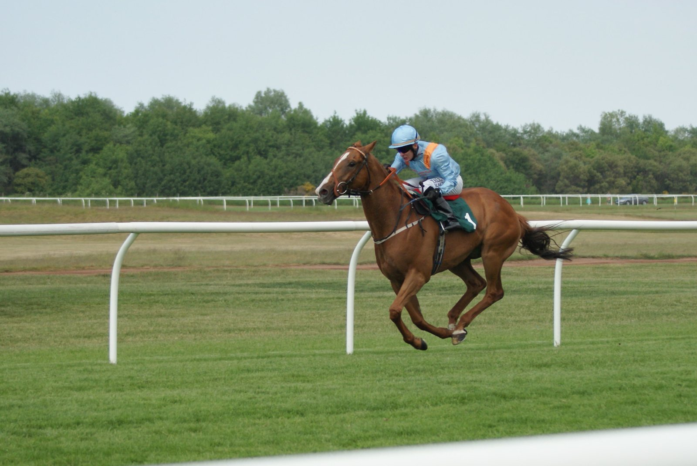

David Flood comparece ante el Panel Disciplinario de la BHA por un incidente en Brighton
El órgano disciplinario independiente estudia este miércoles si Flood vulneró la regla (J)19 al orinar presuntamente en una cuadra del hipódromo de Brighton el pasado 21 de junio.

CC BY 2.0
La vista está convocada para las 9:30 horas del miércoles 18 de noviembre. El Panel Disciplinario, dependiente del Panel Judicial de la British Horseracing Authority (BHA), examinará el cargo contra David Flood, a quien se acusa de infringir la regla (J)19.
Los hechos se remontan al 21 de junio de 2026. Ese día, según el expediente, Flood presuntamente orinó en una de las cuadras del hipódromo de Brighton. La convocatoria no detalla qué sanción podría acarrear la infracción si queda probada.
El tribunal lo forman Pritesh Rathod, que lo preside, Miranda Fisher y Joanna Armstrong. Como el resto de las audiencias de este órgano, la sesión se celebra por videoconferencia a través de Zoom. El funcionamiento de las vistas en remoto está recogido en el documento del Panel Judicial.
El Panel Judicial de la BHA es un organismo independiente que agrupa el Panel Disciplinario, el Comité de Apelación y el Comité de Licencias. Recibe apoyo administrativo de la autoridad hípica británica a través de su secretaría ejecutiva, el Judicial Panel Executive.
Por Martín Larrañeta